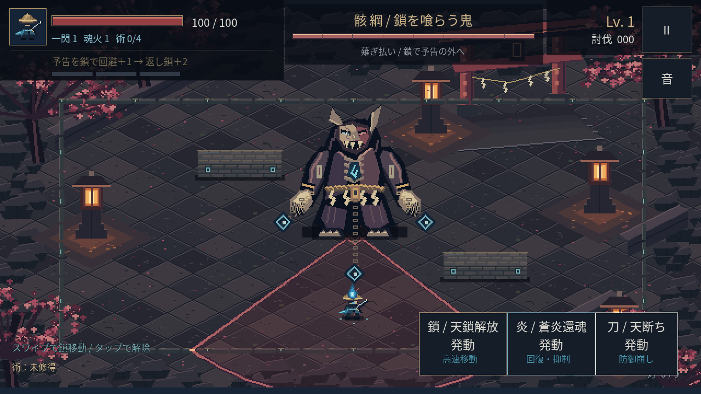
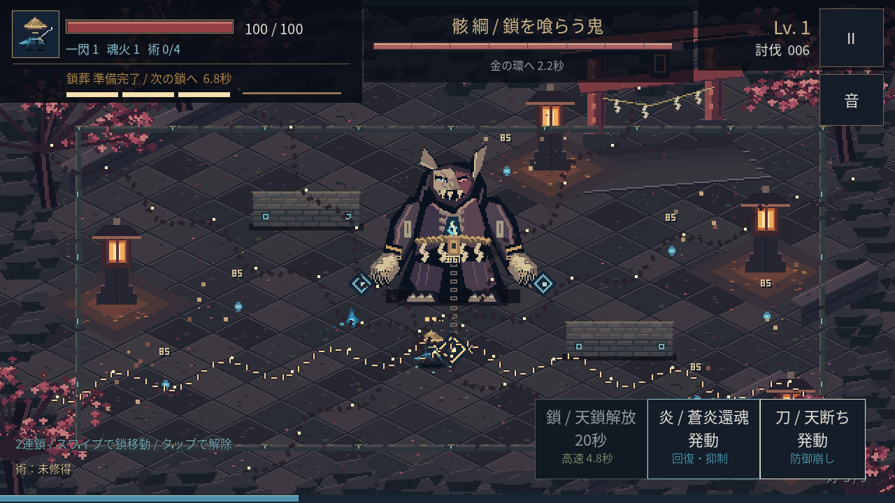
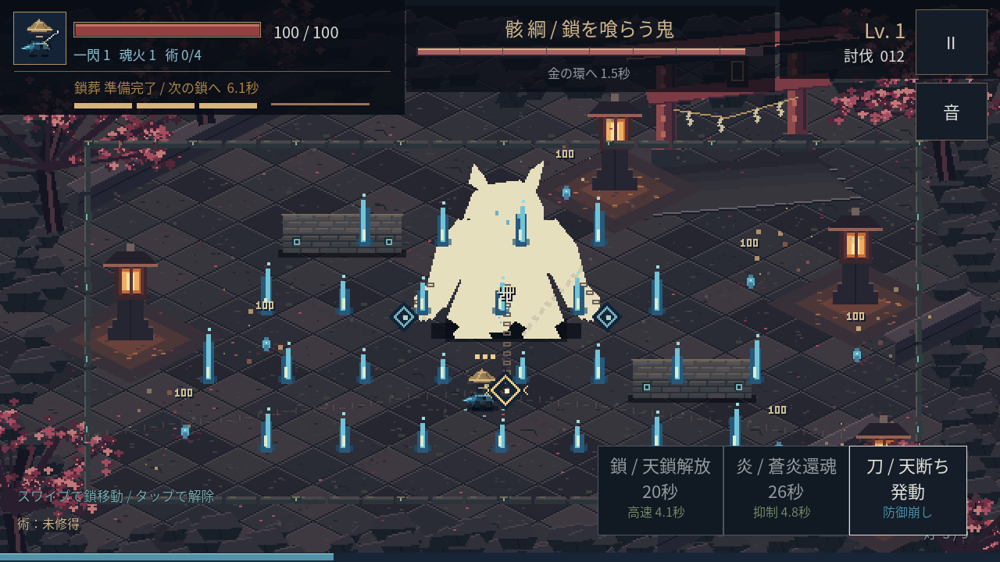
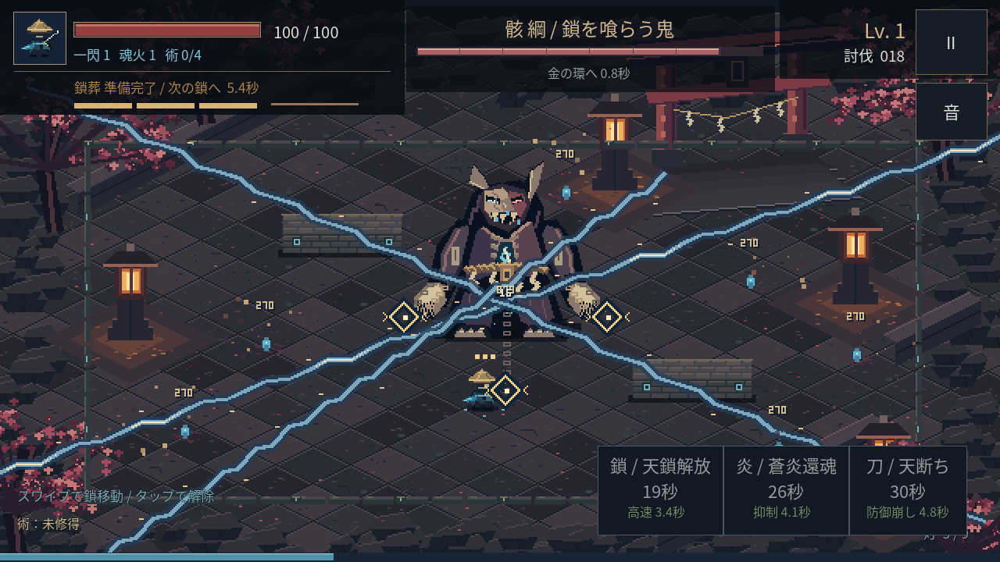
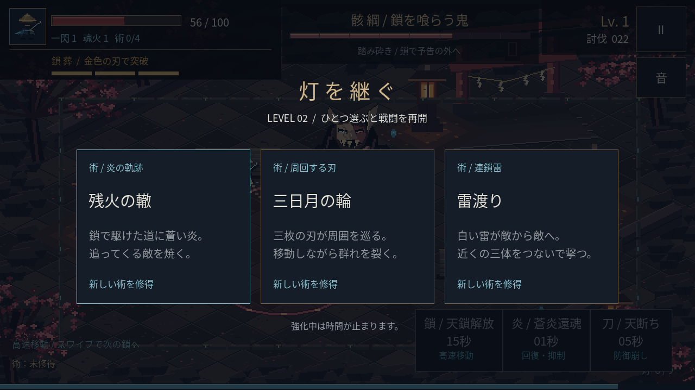
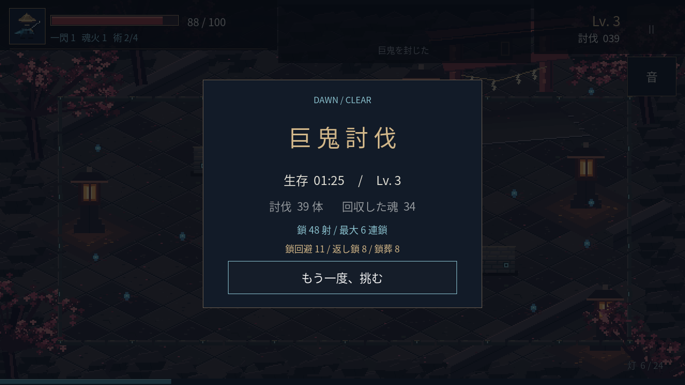

ANDROID / GIANT & THREE RITES / 0.5.0
朧火 OBOROBI
予告を鎖で避け、巨大な鬼へ返し鎖。
鎖・炎・刀の大技を、自分のタイミングで。
約78MB · Android 7.0以降 · OpenGL ES 3.0対応端末
スマホへのGodot導入は不要です。

インストール
- 上のボタンでAPKを保存します。アプリ内のブラウザで保存できない場合は、このページをChromeなどで開いてください。
- スマホの「ファイル」アプリで Oborobi-Android.apk を開きます。
- 許可を求められた場合は、そのブラウザ／ファイルアプリについて「この提供元を許可」を有効にし、戻って「インストール」を押します。
- アプリ 「朧火」 → 「巨鬼に挑む」。
0.1.1〜0.4.0と同じ署名で、以前の「朧火」に上書き更新できる構成です。
鎖で回避して、反撃へ
- 進みたい方向へ短くスワイプ。 指を離す前に発射。一度離して次のスワイプでつなぎ直せます。短いタップで解除。
- 接続先はボスの3つの環・石垣・外周。小さい取り巻きは高速移動を遮りません。
- 赤い予告の中から鎖で逃げ、着弾時に範囲外へ：鎖火＋1。 続けて、隙に光る金色の環へ戻ると＋2と強い反撃・経験値。
- 鎖火3で次の鎖が「鎖葬」に。 広い金色の斬撃で突破します。被弾で失い、接続や獲得が7秒途切れても消えます。
敵の近くを通るだけでは溜まりません。鎖移動中も予告攻撃が当たれば被弾します。逃げた後に戻れる距離を選ぶ攻防を試してください。
手動大技3種
右下のボタンで任意に発動。開始から使え、それぞれ別の再使用待ちがあります。全て戦場全体を攻撃し、さらに5秒の戦術効果を得ます。
- 鎖 / 天鎖解放：金色の鎖が集結。鎖の加速と移動速度が大幅アップ。回避や連続移動へ。（20秒で再使用）
- 炎 / 蒼炎還魂：蒼い魂火が広がる。HP28回復、取り巻きの攻撃を抑制、ボスの予告を遅くして被ダメージ半減。立て直しへ。（26秒）
- 刀 / 天断ち：画面を3本の斬撃で切り裂く。ボスの防御を崩して全環を開き、追撃が通る。攻撃機会を作る。（30秒）
実際の大技・成長・討伐画面を見る





刀・魂火と修得した術は自動発動。少数の取り巻きと返し鎖から魂を回収し、成長の3択を選びます。ボスHP0でクリア、HP0で落命。複数ボスへの拡張に進む前の1体の検証です。
右上の停止ボタンやAndroidの「戻る」で一時停止。別のアプリへ切り替えた後は、再開ボタンを押してください。
Godot上で161項目・シナリオ、通常HPで3パターンの討伐、動作中の実描画とAPK署名を確認しました。0.5.0のAndroid実機での起動・操作感・FPS・発熱は未検証です。